Contents
clear;
clc;
close all;
Setup
load ('projIB.mat');
sound(noisy,fs);
Butterworth = designfilt('lowpassiir','PassbandFrequency',2500, 'StopbandFrequency',4000,'PassbandRipple',3,'StopbandAttenuation',55,'SampleRate',fs,'DesignMethod','butter');
ChebyshevI = designfilt('lowpassiir','PassbandFrequency',2500,'StopbandFrequency',4000,'PassbandRipple',3,'StopbandAttenuation',55,'SampleRate',fs,'DesignMethod','cheby1');
ChebyshevII = designfilt('lowpassiir','PassbandFrequency',2500, 'StopbandFrequency',4000,'PassbandRipple',3, 'StopbandAttenuation',55,'SampleRate',fs,'DesignMethod','cheby2');
Elliptic = designfilt('lowpassiir','PassbandFrequency',2500,'StopbandFrequency',4000,'PassbandRipple',3, 'StopbandAttenuation',55,'SampleRate',fs,'DesignMethod','ellip');
ParksMcClellan = designfilt('lowpassfir','PassbandFrequency',2500,'StopbandFrequency',4000,'PassbandRipple',3,'StopbandAttenuation',55,'SampleRate',fs,'DesignMethod','equiripple');
Kaiser = designfilt('lowpassfir','PassbandFrequency',2500,'StopbandFrequency',4000,'PassbandRipple',3,'StopbandAttenuation',55,'SampleRate',fs,'DesignMethod','kaiserwin');
Butterworth Filter
orderAndMultFinder(Butterworth, "Butterworth")
graphing(Butterworth, fs, noisy, "Butterworth");
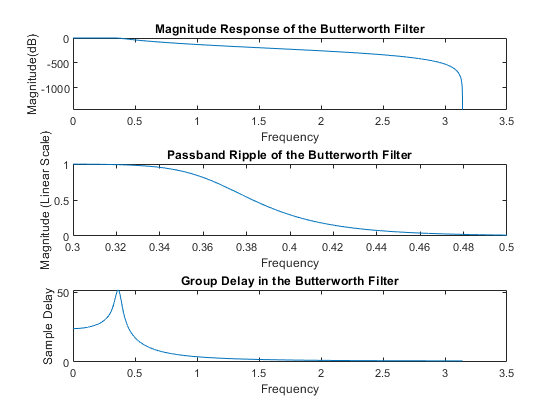 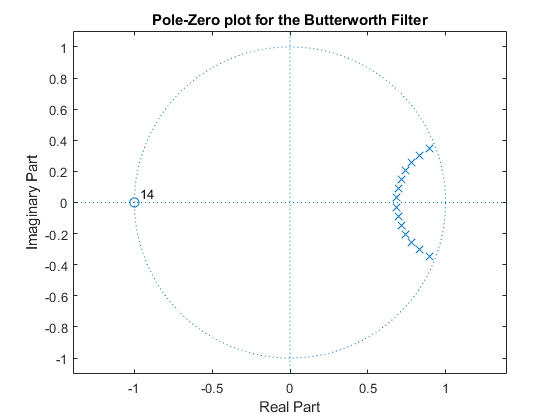 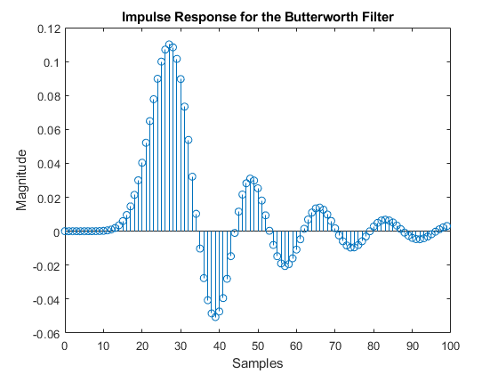
ChebyshevI Filter
orderAndMultFinder(ChebyshevI, "Chebyshev Type I")
graphing(ChebyshevI, fs, noisy, "Chebyshev Type I")
The order of the Chebyshev Type I filter is 7
The number of mulitplying operations for the Chebyshev Type I filter is 16
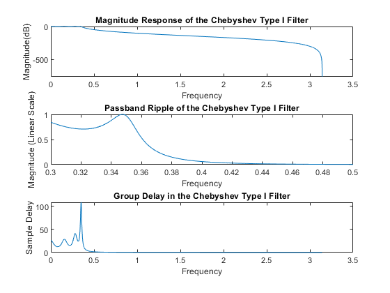 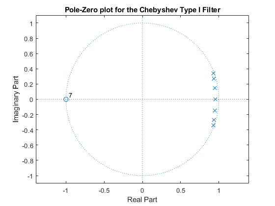 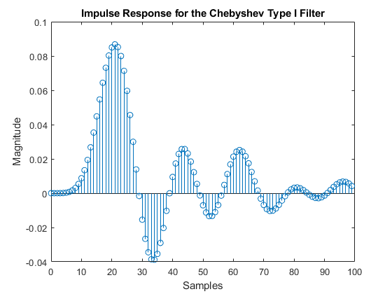
ChebyshevII Filter
orderAndMultFinder(ChebyshevII, "Chebyshev Type II")
graphing(ChebyshevII, fs, noisy, "Chebyshev Type II")
The order of the Chebyshev Type II filter is 7
The number of mulitplying operations for the Chebyshev Type II filter is 16
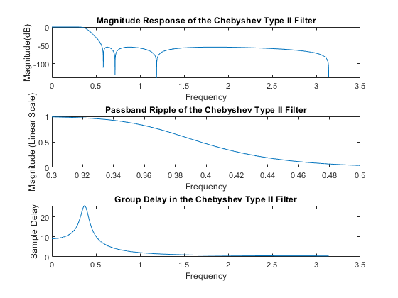 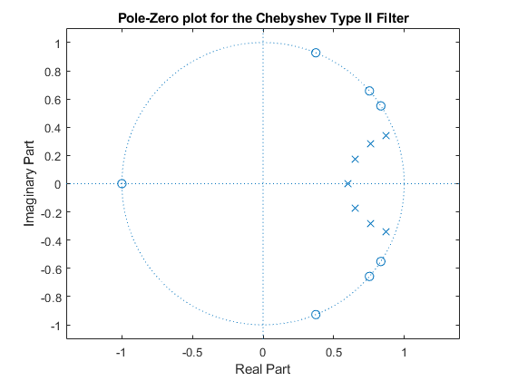 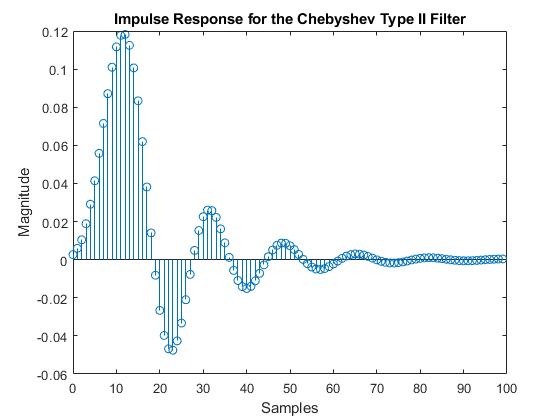
Elliptic Filter
orderAndMultFinder(Elliptic, "Elliptic")
graphing(Elliptic, fs, noisy, "Elliptic")
The order of the Elliptic filter is 5
The number of mulitplying operations for the Elliptic filter is 12
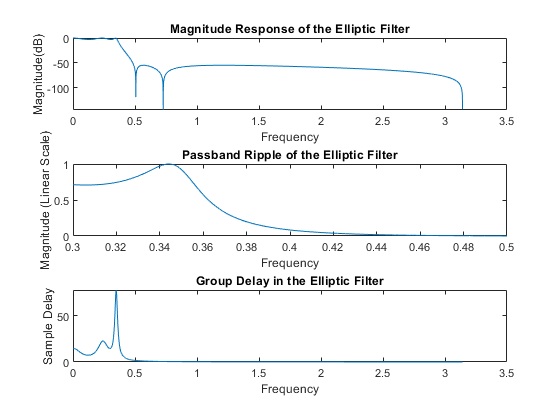 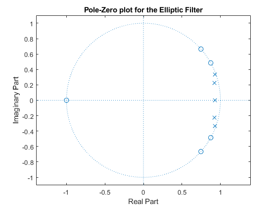 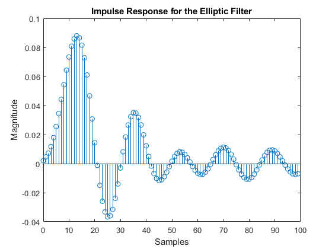
Parks-McClellan Filter
orderAndMultFinder(ParksMcClellan, "Parks-McClellan")
graphing(ParksMcClellan, fs, noisy, "Parks-McClellan")
The order of the Parks-McClellan filter is 49
The number of mulitplying operations for the Parks-McClellan filter is 51
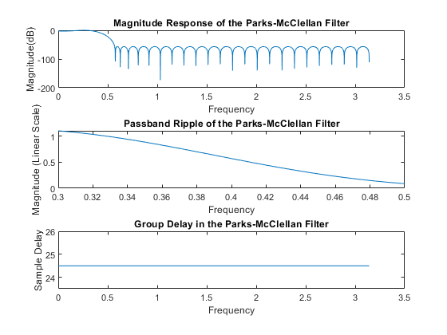 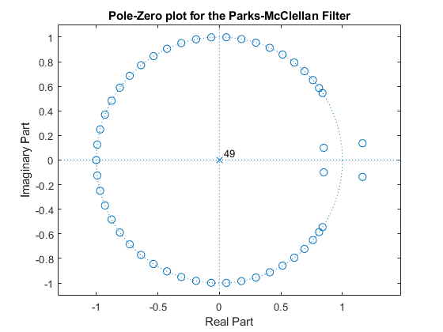 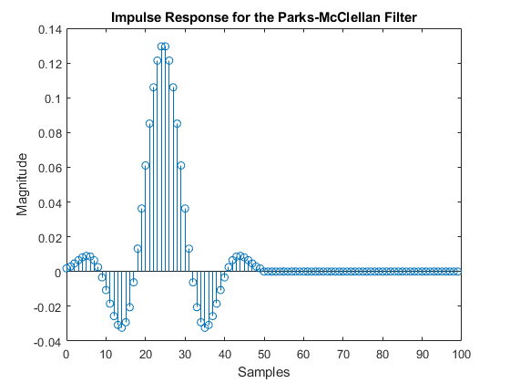
Kaiser Filter
orderAndMultFinder(Kaiser, "Kaiser")
graphing(Kaiser, fs, noisy, "Kaiser")
Qualitative Analysis of Sounds
Functions
function orderAndMultFinder(filter, name)
order = filtord(filter);
fprintf("The order of the %s filter is %d\n", name, order);
[b,a] = tf(filter);
multOps = length(a) + length(b);
fprintf("The number of mulitplying operations for the %s filter is %d\n", name, multOps);
end
function graphing(filters, fs, noisy, name)
[H,f] = freqz(filters, fs);
H_log = 20*log10(abs(H));
figure(1);
subplot(3,1,1);
plot(f, H_log);
title ('Magnitude Response of the ' + name + ' Filter');
xlabel('Frequency');
ylabel('Magnitude(dB)');
subplot(3,1,2);
plot(f,abs(H));
xlim([0.3, 0.5]);
title ('Passband Ripple of the ' + name + ' Filter');
xlabel('Frequency');
ylabel('Magnitude (Linear Scale)');
subplot(3,1,3);
[gd,w] = grpdelay(filters, fs);
plot(w,gd);
title ('Group Delay in the ' + name + ' Filter');
xlabel ('Frequency');
ylabel ('Sample Delay');
figure(2);
[hz, hp, ~] = zplane(filters);
zplane(hz,hp);
title('Pole-Zero plot for the ' + name + ' Filter');
figure(3);
[h,t] = impz(filters, 100);
stem(t,h);
title('Impulse Response for the ' + name + ' Filter');
xlabel('Samples');
ylabel('Magnitude');
filtered = filter(filters, noisy);
soundsc(filtered, fs)
end
The order of the Butterworth filter is 14
The number of mulitplying operations for the Butterworth filter is 30